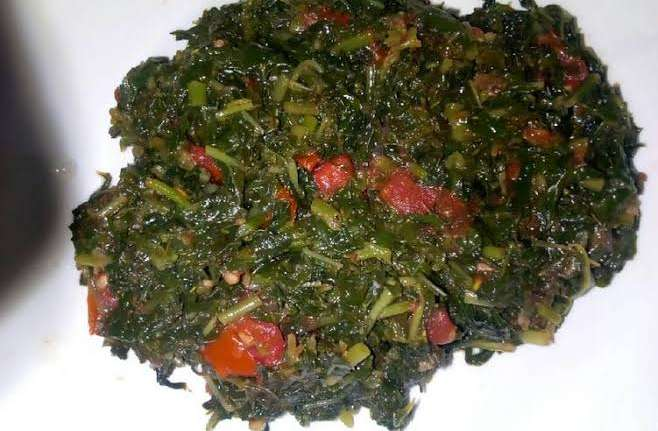

African Nightshade for 2
Indgredients
- African Nightshade half a Kilogram
- 1 Onions
- 2 Tomatoes
- Cooking Oil 3 teaspoons
- Teaspoon of salt
Procedure
- Start by picking the leaves from the branches or the whole branch if its for reasonable size - that's for if your retailer didn't do this as an after-service.
- Cut the leaves of your african nightshade into big pieces or leave them like that - its up to you if you want strings in your plate you can skip
- Wash your african nightshade thoroughly since they usualy come with lots of dirt
- Slice up your onions and tomatoes
- Have your pot on fire and start with the oil
- Start with onions and stir them until they are golden brown
- Add tomatoes and continue until they become fleshy
- Add a teaspoon of salt
- Continue stiring and finaly add your african nightshade in small chucks, they will shrink with time
- Add some water to your pot and give it time to boil, about 10 mins depending on your heat magnitude
- You should be noticing the aroma, you are ready for serving
African nightshade can be served with Ugali, rice and roti.
Top
Home | Prev | Next